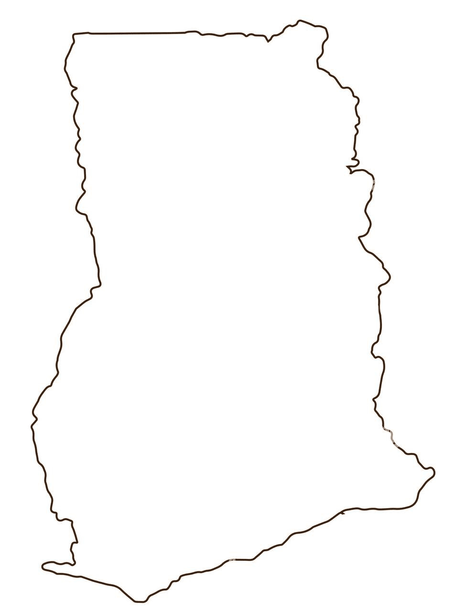

About Me
My name is John Derek Kakraba Hagan. I was born in Assin Foso, a town in the central region of Ghana. I grew up there, lived there for most of my life but I currently live in Kumasi, in the Ashanti region of Ghana. I love my family very much. I am the last of three sibling. Both are sisters and both are currently married.
Kumasi, Ghana
Kumasi, the second-largest city in Ghana, is a vibrant cultural and historical hub located in the Ashanti Region. Often referred to as the "Garden City" of West Africa due to its lush greenery, Kumasi is the capital of the Ashanti Kingdom and holds immense significance in the history of Ghana.